實驗室 33 格：重畫後挑圖
2026-11-15 用新的四面牆（8 張半面牆參考圖）重畫。每格 4 張，框起來的是 Claude 的建議；你決定每格留哪一張，沒選的格子整格重畫。
要你決定的（2 格）
EP1-04-01WS 博士（PROF）與 HERO 的師生反差（以 PROF 為主）
博士手舞足蹈講白堊紀，HERO 低頭滑手機、連頭都沒抬
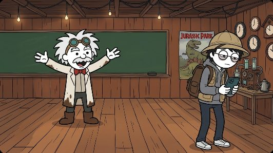
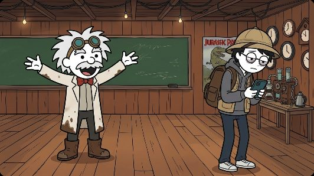
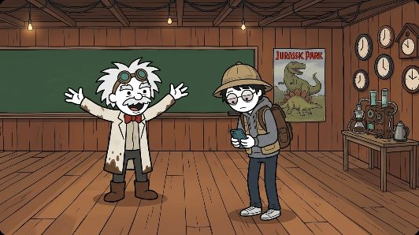
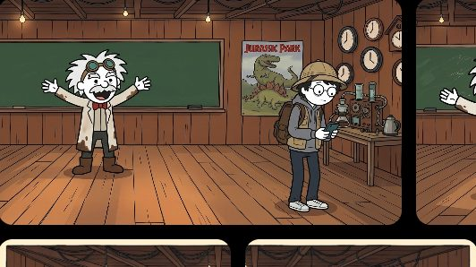
建議第 2 張 博士張手講課、HERO 低頭滑手機，黑板、海報、轉角的鐘和咖啡機都對。
第 4 張存成了 Flow 圖庫截圖，不能用。
EP1-04-02MCU HERO
HERO 弓著背、雙手捧手機貼近臉，頭壓得低低的，眼睛黏在螢幕上
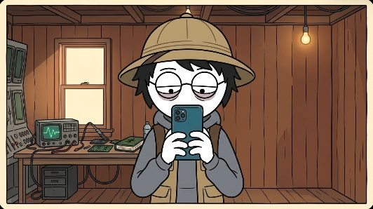
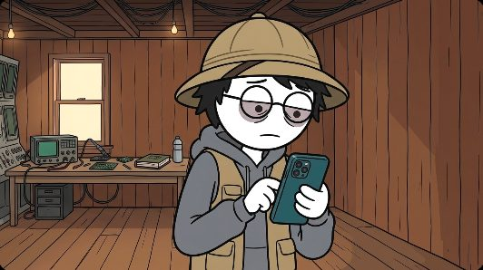
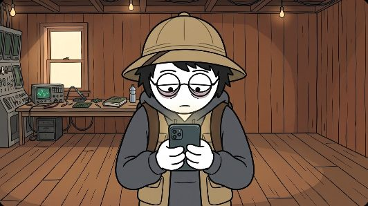
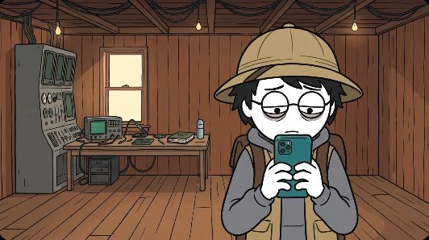
建議第 4 張 手機貼近臉、頭壓低；後面控制台在左角、工作桌緊接著。
EP1-04-03MS HERO（博士在旁聽）
HERO 眼睛還盯著手機，只是嘴巴張開隨口丟出一個問題，頭微微轉向博士
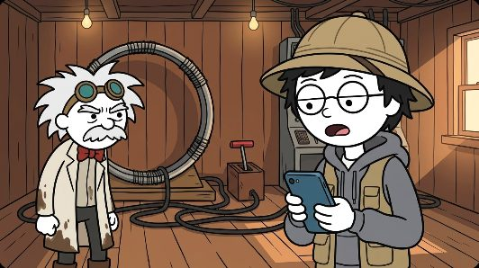
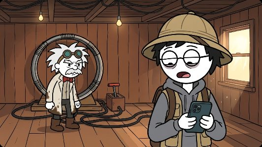
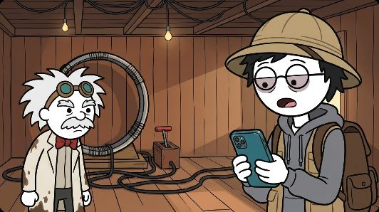
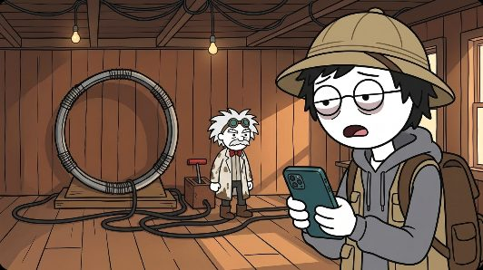
建議第 3 張 HERO 盯手機、嘴張開；博士在旁皺眉，圓環、拉桿、控制台順序對。
EP1-04-04MS PROF
博士皺眉、張嘴說話、豎起一根食指強調，一副『你搞錯了』的表情
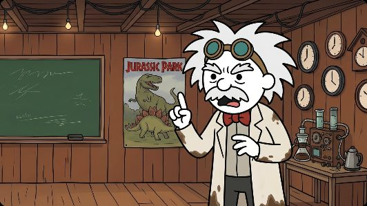
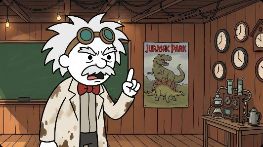
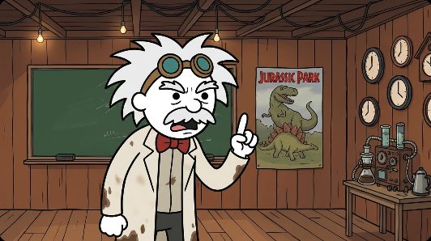
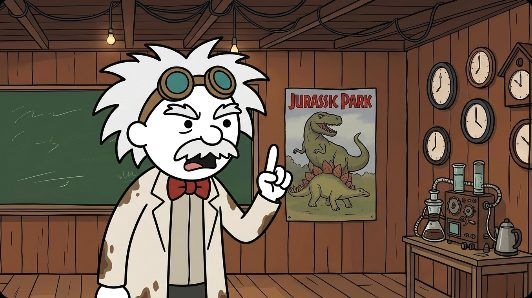
建議第 2 張 皺眉、豎食指的「你搞錯了」最明顯。
EP1-04-05MLS PROF
博士背對偏側，抬起手指著黑板上已經畫好的時間線（長橫線、左端劍龍、右端暴龍的粉筆簡圖），正在講解，不是正在畫。
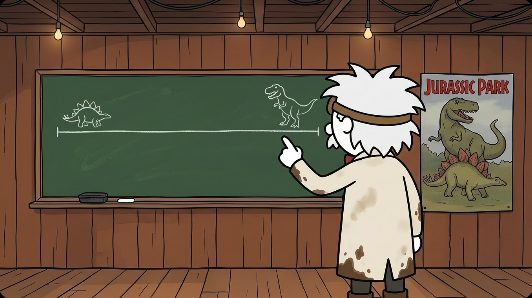
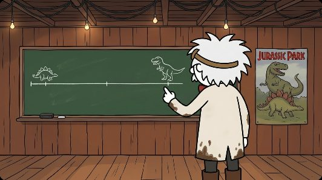
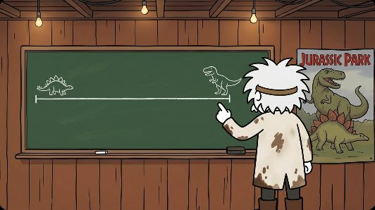
建議第 2 張 背對偏側、手指黑板上的時間線（左劍龍、右暴龍）。
第一輪連失敗 2 次，重畫後只出 3 張。
EP1-04-06MS PROF
博士笑咪咪地兩手各舉一隻玩具恐龍，一大一小並陳，正在開講第一課
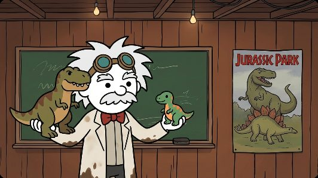
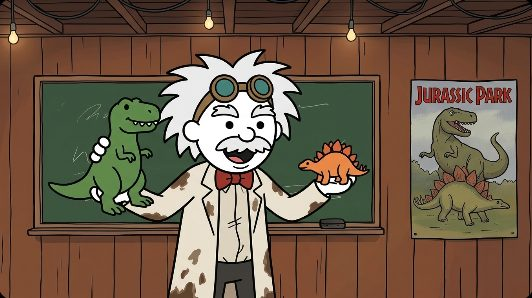
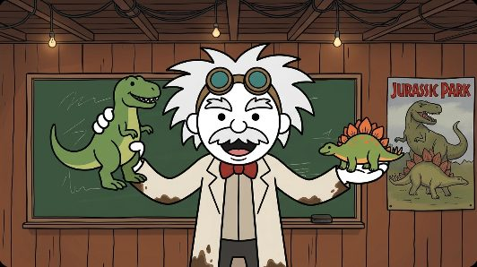
建議第 2 張 一大一小兩隻玩具恐龍並陳，笑得最開。
只出 3 張。
EP1-04-07MS HERO
博士講得口沫橫飛的同時，切到 HERO：還是低頭、拇指在滑手機，完全狀況外
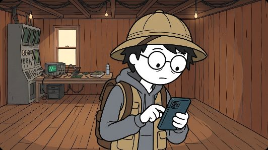
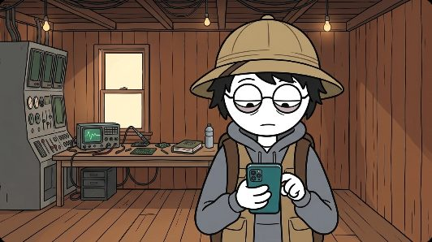
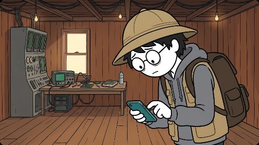
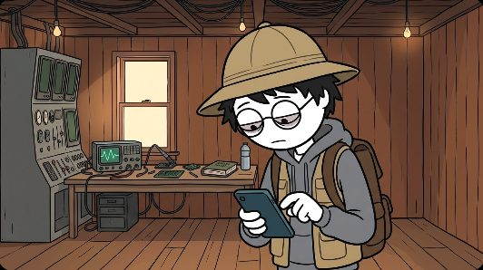
建議第 3 張 彎腰低頭、拇指滑手機，最狀況外。
EP1-04-08MS PROF
博士伸出兩根手指點『第二課』，接著雙手比出不大不小的中等尺寸，解釋得很起勁
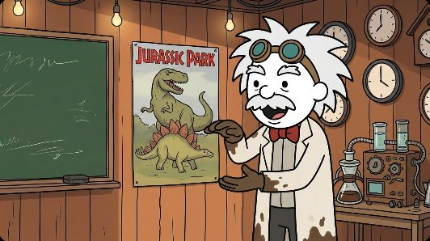
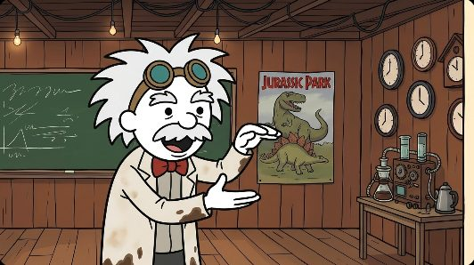
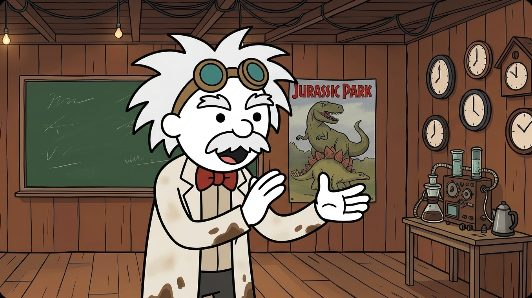
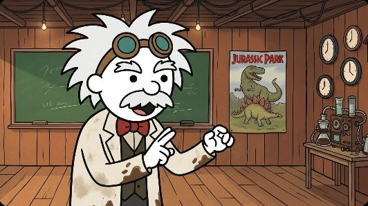
建議第 2 張 雙手比出中等尺寸的動作最清楚。
EP1-04-09MCU HERO
HERO 頭往後一仰、嘴張得超大打了個哈欠，一手仍抓著手機，無聊到不行
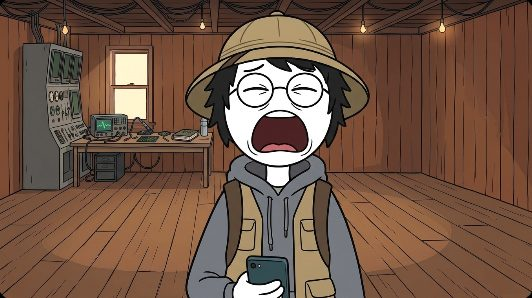
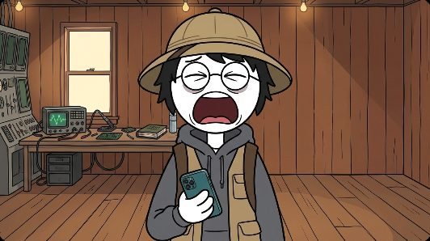
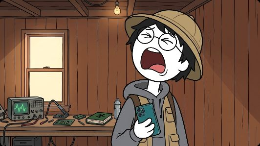
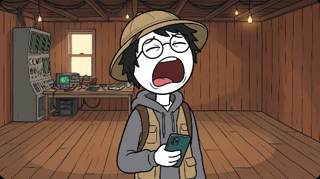
建議第 3 張 頭往後仰、哈欠最大，手上還抓著手機。
EP1-04-10MS PROF
博士掏出碼表舉在手上，另一手指向畫外右邊的 HERO，叫他跑一趟
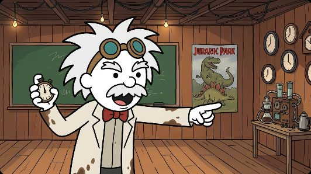
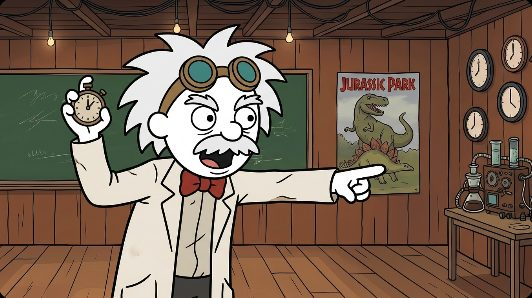
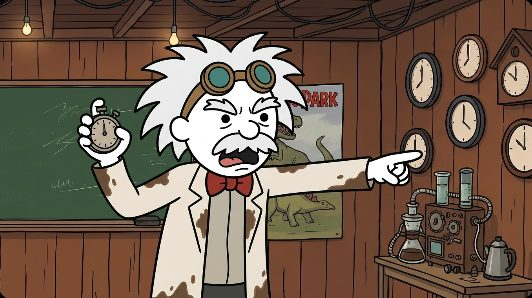
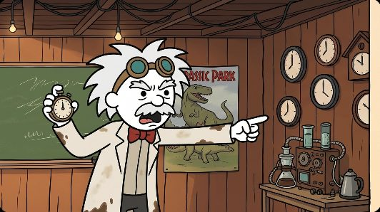
建議第 2 張 舉碼表、另一手指向畫外右邊，表情最用力。
EP1-04-11WS HERO（博士在旁）
HERO 低頭滑手機、幾乎在拖著腳往右走；博士手裡的碼表垂著根本沒按，一臉無言
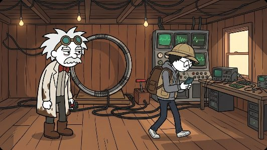
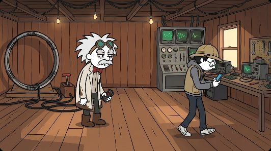
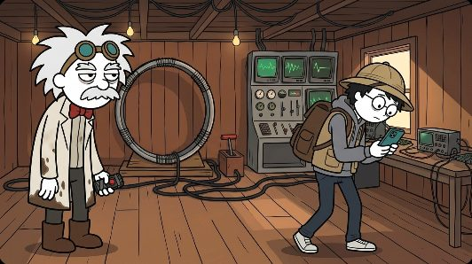
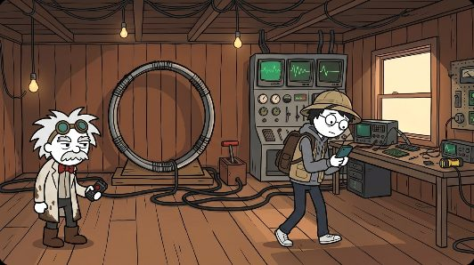
建議第 3 張 HERO 低頭拖著腳往右走；博士垂著碼表一臉無言。
EP1-04-12MS PROF
博士一手比三根手指點『第三課』，另一手指向牆上白框裡的獵豹追羚羊示意圖，講得眉飛色舞。
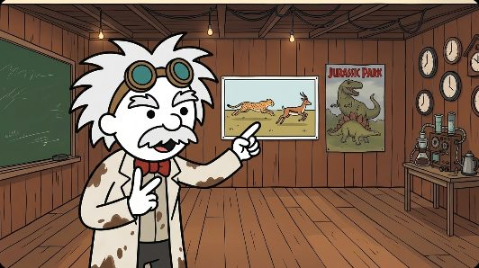
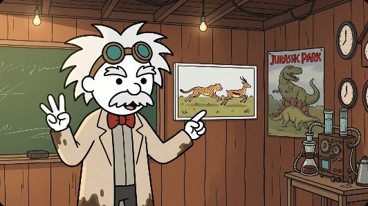
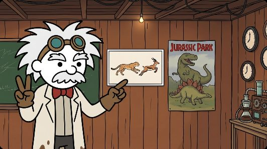
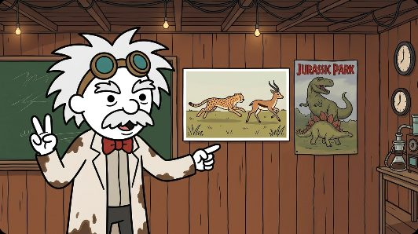
建議第 4 張 手指著獵豹追羚羊的白框圖，海報、鐘都對。
要你決定：prompt 寫比三根手指，4 張都只比兩根（V）。要重畫嗎？
EP1-04-13FS PROF
博士示範急轉彎，身體往一邊一扭，突然僵住、一手摀住腰、皺眉哀號，差點閃到腰的瞬間
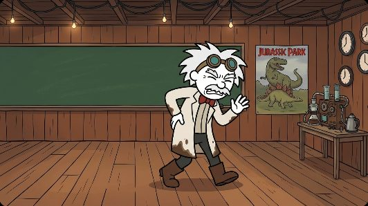
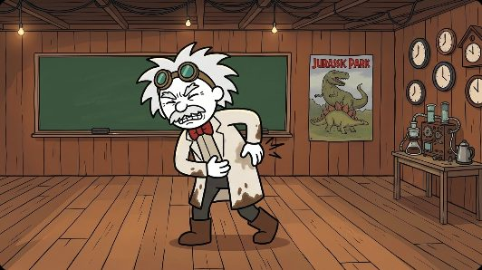
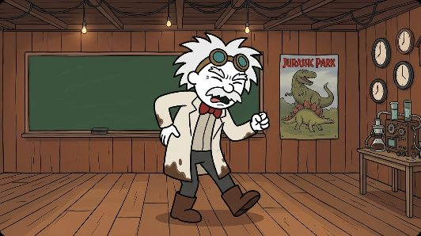
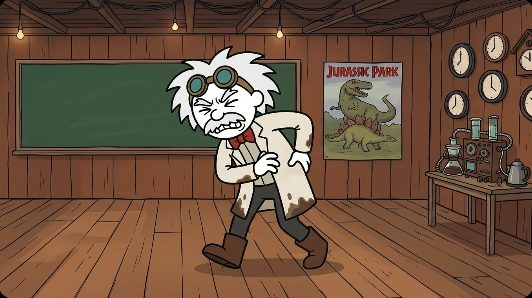
建議第 2 張 扭腰、摀腰、皺眉哀號的瞬間最清楚。
EP1-04-14MCU HERO
HERO 難得把頭抬起來、朝博士方向冷冷瞄了一眼，眼神毫無興趣，下一刻又要低頭
建議第 4 張 抬眼冷冷一瞄、毫無興趣。
EP1-04-15MS PROF（HERO 接）
博士把相機、樣本袋、膠帶纏的灰盒一字排開往 HERO 推過去；HERO 伸手接
建議第 3 張 相機、樣本袋、灰盒一字排開往 HERO 推；HERO 伸手接；左緣鐘、右緣拉桿都在。
EP1-04-16MCU HERO
被問電擊槍有沒有帶，HERO 一手拍拍褲子口袋、隨便點個頭『有啦』
建議第 2 張 拍褲子口袋、嘴巴「有啦」的隨便感。
EP1-04-18FS PROF
博士板起臉、豎起一根手指搖，撂下『沒拍到暴龍、沒帶回牙齒就不付錢』的威脅，仰角強調他擺出的威嚴
建議第 2 張 板臉、豎指搖，有威嚴；黑板、海報、鐘、咖啡機都在。
EP1-04-19MS HERO
HERO 雙手接過一本厚厚的生存指南，手臂被重量壓得往下垂，一臉嫌棄地低頭看
建議第 3 張 雙手抱厚指南、手臂往下垂、嫌棄低頭。
EP1-04-20MS HERO
HERO 低頭，一邊是厚重指南、一邊是洋芋片，眼看就要丟下指南選洋芋片
建議第 3 張 一手指南、一手洋芋片，眼睛看洋芋片，選擇的意思最清楚。
EP1-04-21MS HERO
HERO 把洋芋片和回家按鈕一起塞進打開的背包，厚厚的生存指南被晾在旁邊沒帶
建議第 2 張 洋芋片和回家按鈕往背包塞，指南被晾在桌上。
EP1-04-22WS PROF（HERO 在圓環）
博士嘴上說等你準備好，手卻已經抓著紅拉桿一把拉下去，咧嘴興奮；HERO 在圓環裡被動等著
建議第 3 張 博士咧嘴拉下拉桿；圓環、拉桿、控制台順序對。
要你決定：分鏡表寫 HERO 站在圓環裡，prompt 寫 HERO 站在左邊等，4 張都畫在圓環外。要改 prompt 重畫嗎？
EP1-04-23WS PROF 與 HERO（博士拍機器那一刻，圓環時光門炸開、HERO 被吸入）
機器毫無動靜後博士氣得一掌拍下去的瞬間，北牆的圓環突然爆出發光旋轉的時光門；站在圓環裡的 HERO 被猛力往後吸進漩渦，身體向後仰、手腳亂揮、雙腳離地、嘴張大尖叫、手機脫手飛出；博士維持拍打的姿勢、錯愕地看著 HERO 被吸走
建議第 3 張 博士一掌拍在機器上、HERO 被吸進時光門、手機飛出，「拍下去的瞬間」最清楚。
EP1-07-16MS 生存指南與水壺（實驗室桌面閃回・插入鏡頭）
冷笑話插入：攤開的求生指南和水壺孤零零躺在實驗室桌上，和 HERO 此刻的處境形成反差
建議第 3 張 攤開的指南和水壺孤零零在工作桌上。
EP1-11-06MS HERO
抬頭聽博士講課、一副半放空又『好像有聽進去一點』的表情；身後《JURASSIC PARK》海報是彩蛋。
建議第 4 張 嘴微張，像「好像有聽進去一點」；黑板、海報、鐘、咖啡機位置對。
EP1-13-01WS HERO（滿身泥巴仰躺在地）
HERO 四肢攤開、仰躺，滿身泥巴，昏頭昏腦剛從時光機摔出來的那一刻。
建議第 1 張 離時光機最近，泥巴、牙齒、相機都清楚。
EP1-13-02MLS PROF（開心接過成果）＋ HERO（仰躺遞上）
HERO 虛弱舉手把暴龍牙和裂相機遞上去的那一刻；PROF 蹲著、眉開眼笑、雙手急著接。
建議第 4 張 博士眉開眼笑、雙手伸出去接。
EP1-13-03MS PROF（把相機翻過來端詳）
PROF 把相機翻過來、低頭端詳的那一刻，眉毛上揚、好奇。
建議第 3 張 相機翻過來、螢幕上的暴龍看得到。
EP1-13-04ECU 插入鏡頭：裂掉的相機（螢幕仍亮著暴龍照片）
鏡頭停在相機上——照片完好、機身卻報銷——先吃『照片還在』，停一拍，再吃『已經不太算是相機了』。
建議第 4 張 只有這張的手是純白；1–3 張畫成膚色。
EP1-13-05MS PROF（抽鈔票、塞收據）
PROF 抽走鈔票、同時把收據塞回信封的那一刻，嘴角奸笑。
建議第 3 張 抽鈔票、塞收據兩個動作都有，表情最奸。
EP1-13-07FS HERO（仰躺、手肘撐起頭肩、錯愕）
錢沒了還倒欠的那一刻——HERO 撐著手肘、張嘴錯愕、難以置信，整個人癱在地上、雙腿無力攤開。
建議第 1 張 手肘撐地、嘴張大，錯愕最明顯。
EP1-13-08MS PROF（掏出下一張任務單）
PROF 得意洋洋把下一張任務單掏出來、舉給 HERO 看的那一刻。
建議第 4 張 舉任務單，最得意。
EP1-13-09CU 插入鏡頭：任務單（彗星圖）
鏡頭停在任務單上，揭露下一個任務目標（彗星）。
建議第 1 張 彗星最清楚，手是白的；2、4 的手是膚色。
EP1-13-10WS PROF（站挺拍胸口保證）＋ HERO（仰躺面無表情懷疑）
博士拍胸口打包票的那一刻；HERO 死魚眼般的懷疑定格，收在笑點上（他上次也是這麼說的）。
建議第 3 張 HERO 死魚眼、博士拍胸口，兩個人都清楚。